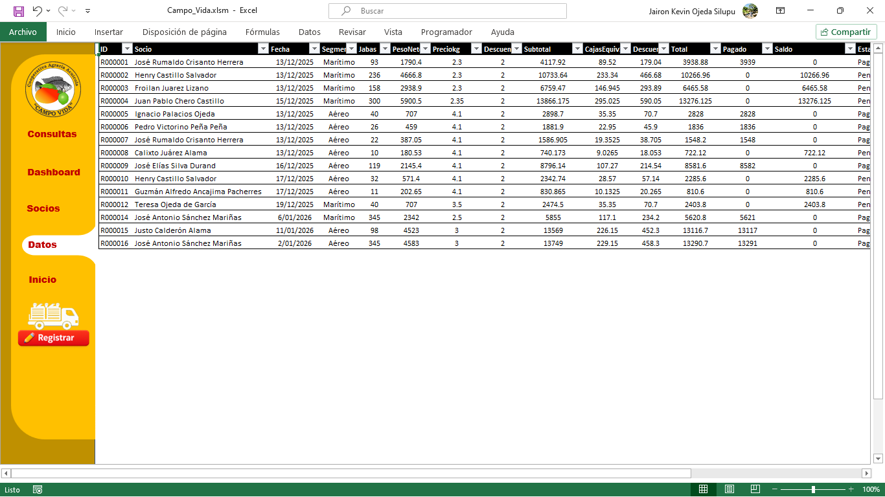
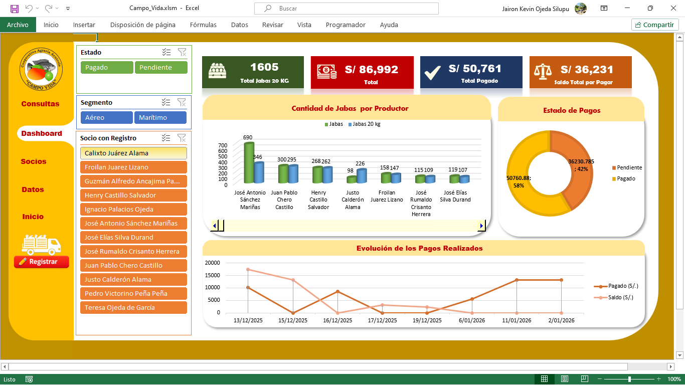

Sistema de Registro y Control de Producción de Mango en Excel (VBA + Dashboard)
Problema
La asociación de productores de mango enfrentaba dificultades para registrar, organizar y analizar la información de producción y pagos por socio.
Los registros se realizaban de forma dispersa y manual, lo que generaba:
- Retrasos en el conteo de jabas/cajas cosechadas
- Dificultad para conocer pagos realizados y saldos pendientes
- Falta de reportes claros y oportunos para los socios
- Alto riesgo de errores en cálculos y consolidación de información
Como consecuencia, el análisis operativo y económico tomaba demasiado tiempo y no permitía una toma de decisiones ágil.
Objetivo
Optimizar y automatizar el registro de producción y pagos de los socios, permitiendo:
- Conteo rápido y confiable de cajas cosechadas en campo
- Cálculo automático de importes, descuentos, pagos y saldos
- Visualización inmediata del estado de pagos por socio
- Un dashboard interactivo para reportes claros y oportunos
Orientado a mejorar la gestión interna y la toma de decisiones de la asociación.
Solución
Dado que la asociación cuenta con aproximadamente 54 socios y un volumen de datos moderado, se diseñó una solución 100% en Excel, utilizándolo como base de datos estructurada.
La solución se apoyó en:
- VBA en Excel para automatizar el ingreso, edición y validación de registros
- Formularios (UserForms) para estandarizar la captura de datos
- Tablas estructuradas para asegurar integridad y trazabilidad
- Reportes dinámicos y segmentadores para análisis flexible
Producto final
Se desarrolló un Sistema de Registro de Producción y Pagos en Excel, con características de aplicación:
- Menú de navegación tipo sistema (Inicio, Dashboard, Socios, Datos, Consultas)
- Formulario de registro con cálculos automáticos (subtotal, descuento, total, pagado, saldo, estado)
- Base de datos centralizada por socio y fecha
- Módulo de gestión de socios (IDs y contactos)
- Dashboard con KPIs, gráficos y filtros interactivos
- Reportes en tiempo real para seguimiento operativo y financiero
El sistema permitió reducir tiempos de registro, minimizar errores y mejorar la transparencia de la información hacia los socios.
Evidencias
Demostración en video
Debido a que se trata de un servicio particular, el proyecto se presenta mediante un video demostrativo, con la debida autorización:
Capturas


 
